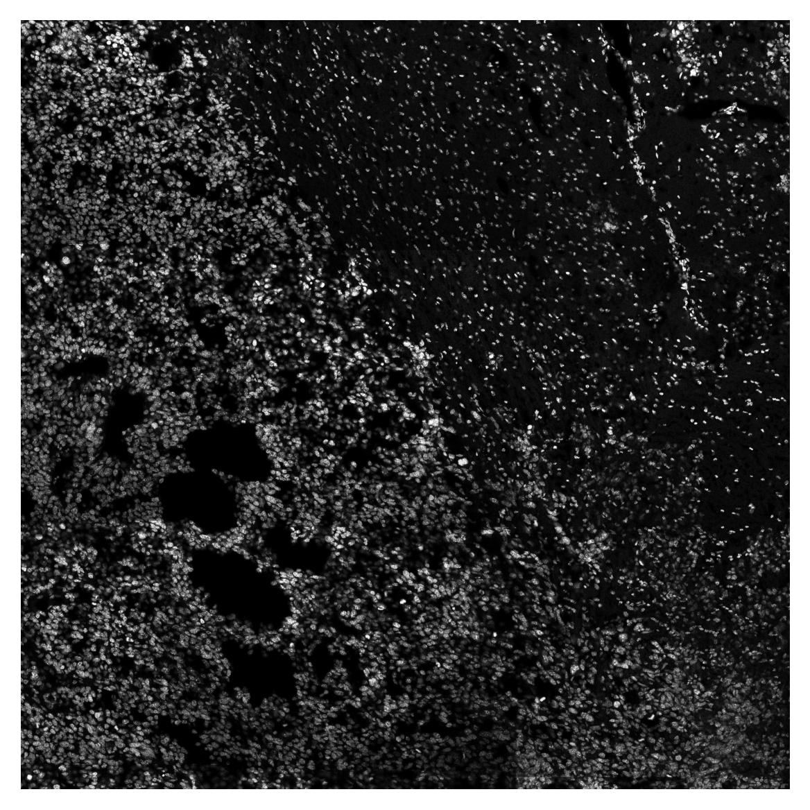
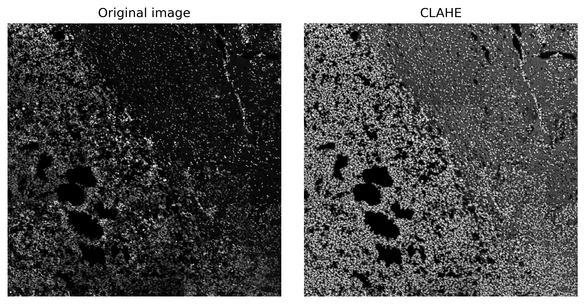
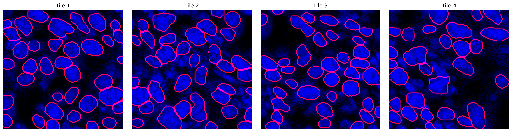
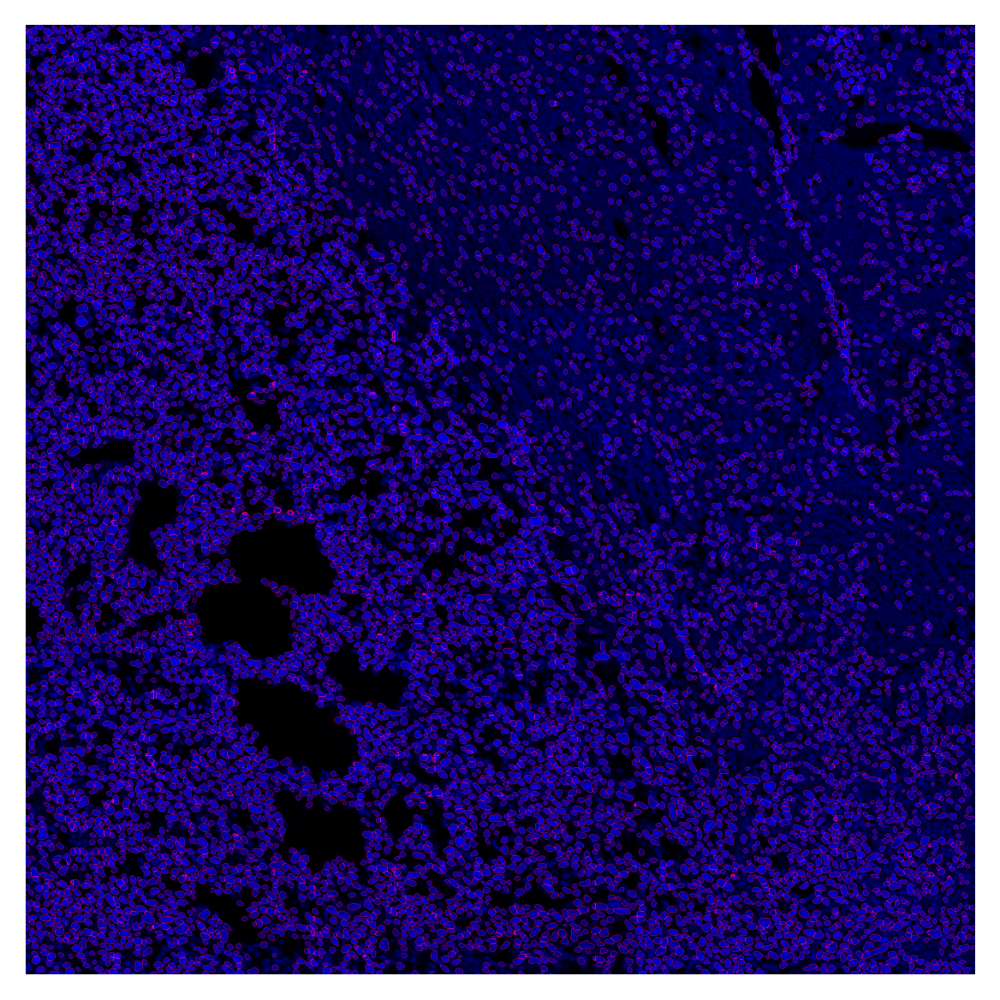
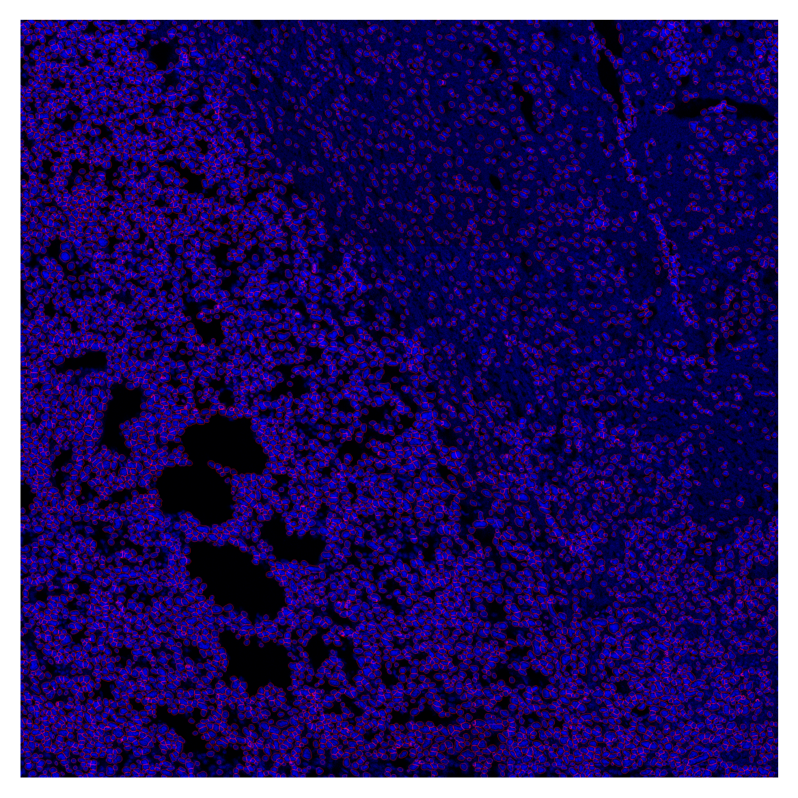

filename = "../data/example_image.tif"
model_path = "../data/example_model"
radius_um = 5.0NEST
NEST – Nuclear Extraction and Segmentation Tool

Below you’ll find everything you need to get started with NEST, from installing the package to running a complete segmentation pipeline on your own images. The typical workflow involves:
- Loading and visualizing your raw image
- Correcting illumination artifacts using CLAHE
- Dividing the image into overlapping tiles
- Segmenting nuclei with a pre‐trained CellPose model
- Stitching the tile‐level masks back into a full‐image segmentation
- Expanding nuclear labels to approximate cell boundaries
- Overlaying outlines and exporting results
Installation
Install latest from the GitHub repository:
$ pip install git+https://github.com/plezar/NEST.gitor from conda
$ conda install -c plezar NESTor from pypi
$ pip install NESTDocumentation
Documentation can be found hosted on this GitHub repository’s pages. Additionally you can find package manager specific guidelines on conda and pypi respectively.
How to use
The core inputs required to run NEST are:
Input Image
A grayscale microscopy image (TIFF or similar) containing the nuclei you wish to segment.CellPose Model
Path to a pre-trained CellPose model.Expansion Radius (µm)
The distance (in micrometers) by which to expand the nuclear masks to approximate whole-cell boundaries.
Given these inputs, NEST will:
- Load and enhance the image for uniform illumination.
- Split the image into overlapping tiles.
- Run segmentation on each tile.
- Stitch tile masks into a global mask.
- Optionally expand masks to full-cell labels.
Example Workflow
Reading the Input Image
We provide a sample image in the data folder. This image was acquired using a Leica Stellaris Dive system by stitching multiple 1024×1024 fields of view:
image = cv2.imread(filename, cv2.IMREAD_UNCHANGED)
plt.imshow(image, cmap='grey')
plt.axis('off')
plt.show()
Flat-Field Correction with CLAHE
Microscopy images often suffer from uneven illumination due to optical and sample variations. NEST uses Contrast Limited Adaptive Histogram Equalization (CLAHE) to address this:
- Local Processing: The image is divided into small tiles (matching the stitching grid).
- Histogram Equalization: Each tile’s brightness distribution is equalized independently.
- Contrast Limiting: A
clip_limitprevents over-enhancement of noise. - Seamless Merging: Tiles are blended back together to produce a smoothly corrected image.
image_enh = clahe(image, clip_limit = 4, tile_grid_size = count(image, t = 24, v = 0.1))fig, (ax1, ax2) = plt.subplots(1, 2, figsize=(8, 4))
ax1.imshow(image, cmap='grey')
ax1.set_title('Original image')
ax1.axis('off')
ax2.imshow(image_enh, cmap='grey')
ax2.set_title('CLAHE')
ax2.axis('off')
plt.tight_layout()
plt.show()
Notice that local brightness gradients are flattened while preserving fine nuclear details.
Tiling the Enhanced Image
To maintain segmentation accuracy at the edges of each tile, NEST splits the enhanced image into 128×128 pixel tiles with a 20-pixel overlap. This overlap captures nuclei that span tile borders, reducing artifacts. Larger overlap improves accuracy but increases computational load.
tiles, x, y = split(image_enh, tile_size = (128, 128), overlap = 20)
print(tiles.shape)(576, 128, 128)Segmentation
This example demonstrates nuclear segmentation, but the same workflow in principle can be applied to any segmentation task (membrane or cytoplasmic).
mask = predict(model_path, tiles, cellpose_param=(0.32, 0.08), use_gpu=True)
np.save('../cache/mask.npy', mask)mask = np.load('../cache/mask.npy')fig, axes = plt.subplots(1, 4, figsize=(16,4))
titles = ['Tile 1', 'Tile 2', 'Tile 3', 'Tile 4']
for ax, m, img, title in zip(axes, mask[:4], tiles[:4], titles):
overlay = plot_outlines(m, img)
ax.imshow(overlay)
ax.axis('off')
ax.set_title(title)
plt.tight_layout()
plt.show()
Stitching
global_mask = stitch(mask, x, y, 0.2)nuclei_overlay = plot_outlines(global_mask, image_enh, save_path="../data/nuclei_overlay.tif")
plt.imshow(nuclei_overlay)
plt.axis('off')
plt.show()
Nuclear expansion
cell_labels = expand_with_cap(global_mask,
spacing = get_physical_size(filename, verbose=True),
fixed_expand=10.0)Pixel size = 0.534 × 0.534 µm/px
Physical size = 1363.1 × 1363.1 µmcell_overlay = plot_outlines(cell_labels, image_enh, save_path="../data/cell_overlay.tif")
plt.imshow(cell_overlay)
plt.axis('off')
plt.show()